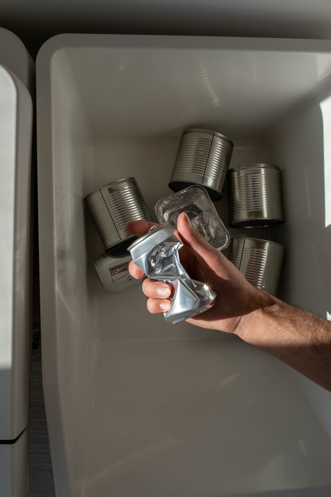

Reducir los residuos domésticos no significa cambiar por completo tu estilo de vida. Con pequeñas acciones diarias puedes disminuir la cantidad de basura que generas, ahorrar dinero y contribuir a la protección del medio ambiente.
"Cada pequeño cambio cuenta. La sostenibilidad comienza con los hábitos que practicamos todos los días."

1. Reduce antes de reciclar
El primer paso para disminuir los residuos consiste en evitar comprar productos innecesarios y elegir artículos duraderos, reutilizables o con menos empaques.
Llevar bolsas reutilizables, comprar a granel y evitar los productos de un solo uso son algunas de las acciones más efectivas para comenzar.
2. Organiza correctamente tus residuos
Separar los residuos reciclables, orgánicos y no reciclables facilita el proceso de recuperación de materiales y disminuye la cantidad de basura enviada a los rellenos sanitarios.
Además, si cuentas con espacio suficiente, puedes iniciar un pequeño sistema de compostaje para aprovechar los residuos orgánicos del hogar.